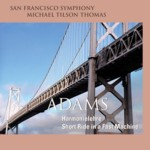
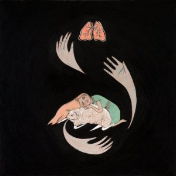
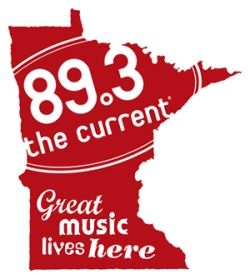

Can it be a year since the last list? Here goes with my favorite 20 releases of 2017. Your tastes are not mine, you will disagree, but maybe there is something here that you might not have discovered, something of beauty that might bring you joy. At one point I thought this might be a thin year; when I got down to making the list I realized there was no filler at the bottom. Exact placement is fuzzy – there are lots of apples and oranges being compared here. Feel free to move any of these up or down a few places in your head.
#1. Taylor Deupree – Somi
Deupree’s Faint from a few years ago is still one of my regular listens and pleasures, and I wonder with hindsight if I should have placed it at number one that year. He gave me another chance with the magnificent, meditative Somi. Loops of single notes from acoustic instruments played at varying intervals are layered and treated to create a fascinating slow dance of beauty and rest. And the deluxe edition packaging was as gorgeous as the music. (Listen)
As I prepared this year’s top 20 list, I discovered that several of my favorite releases this year were not full albums, but brief EPs. Including them in the top 20 albums list felt a bit like trying to compare novels and short stories, so I decided to list them separately. These were my top 5 favorite EPs of 2016:
It’s been a quiet 2016 at Metelaifne Music. Professional commitments have left some regulars with less time for blogging. But we’re still listening. Here are my top 20 albums for 2016. I excluded compilations (though Orbital Planes & Passenger Trains, Vol. 1 from Serein, Into the White from Dronarivm, and Eleven into Fifteen from 130701 all delighted me). As ever, this is the best in my subjective judgment of what I heard and liked, no more, and the numbering is less important than the chance of helping someone find something good that they missed. This year I am treating EPs separately, in a second post.
Here is my top 20 music releases for 2015, with no claim that they are somehow objectively the best or that I listened to everything anyone else did. I have found things that delighted me on other people’s lists, and the point of the exercise is not to replicate or compete with those lists but to highlight some things you may not have found, things that might delight you. The sequence changed every time I made a shortlist, so take the numbers with a pinch of salt – all of them could be at least plus or minus 5 on a given day.
This is the first time I’ve compiled a personal best of the year, and I realise the resulting list says as much about my buying habits as about my taste in classical music. There’s little you might call the mainstream classical repertoire, because I don’t often look for more than one recording of a work, and a tight budget has meant some higher-profile releases never reached my ears; moreover, I’ve also been filling gaps in my collection with older recordings rather than buying new ones. So, give me a month and a couple of hundred euros and it might be a very different list. But let’s stick with the excellence at hand. The order of the list has changed repeatedly during the compiling, and would presumably continue to do so if I didn’t stop now.
1 John Adams: Harmonielehre– Michael Tilson Thomas, San Francisco Symphony (SFS Media). In the early 90s, I discovered the music of Gustav Mahler and Philip Glass at roughly the same time. What I didn’t know then was that a few years earlier John Adams had combined the two (and plenty more besides) in Harmonielehre. The title comes from the treatise of the same name by Schoenberg, but Adams’s music is a gleeful rejection of Schoenberg’s aesthetic, a grand mix of influences and references that constantly surprises.
Here it is finally, my list of the best of what I found among 2012’s new releases. (I found a lot of great jazz from before I was born too, but that’s another story.) I no more listened to everything out there than anyone else did, but these are releases from 2012 that I listened to repeatedly and expect to be returning to in 2013 and beyond. The exact order is arbitrary and could change on any given day, though albums are probably roughly in the right quarter of the list. I’ve included at the end an honor roll of another 20 that did not quite make my list but were also greatly enjoyed. After all, I think the main function of lists like this is help folk find things (at least that’s how I use all the other lists out there).
#1 Pjusk – Tele
Norway’s Pjusk have become one my favorite ambient/electronic artists on the strength of three stellar releases. Tele (full review here) takes us deep into the glacial cold of northern Norwegian landscapes – the tracks are themed around layers of rock and ice. Deep in the earth, we are taken on a dark and resonant atmospheric journey that ends in light and life. Creation is not all sunlit beaches, and this release gives us a masterful aural tour of its frozen recesses.
It’s the time of year when folks post their “Best of” lists, and MiG is no exception. So without further ado, here are the Top 20 albums (and some others that deserve recognition) according to Craig McManus:
Top 20
1. Purity Ring – Shrines: 2011 introduced us to Purity Ring through the singles “Ungirthed”, “Lofticries”, and “Belispeak”, and each of these songs could have made my best of list. Accordingly, I was highly anticipating the release of the band’s debut full length. When news broke that each of these songs would be included on Shrines, however, I grew concerned that Purity Ring didn’t have the depth of quality for a full LP. Obviously, Shrines’ placement on this list demonstrates that my concern was unfounded. With tracks like “Obedear”, “Fineshrine”, and “Crawlersout” added to the early singles, Purity Ring created a dark synth pop gem. The only real negative to the album is the inclusion of the frankly dreadful, “Grandloves”.
On January 24, 2005, Minnesota Public Radio launched 89.3 The Current with the playing of Atmosphere’s hidden track off the Seven’s Travels album, “Shhh”. “Shhh” is an ode to Minnesota and being proud of where you’re from regardless of what others think of your hometown. It was an incredibly appropriate first track to air on a station who’s mission is to bring its listeners the best new local and national music alongside the music that inspired it.
Hoping for the Invisible to Ignite by Parisian collective FareWell Poetry is one of the more absorbing musical journeys of 2011. It is also an album that wears its ambition on its sleeve. A Super 8/16mm black and white film on DVD (trailer here), filled with images of compulsive self-absorption and erotic obsession (warning: nudity), accompanies the 20 minute opening piece, and there’s also an iPhone app to go alongside both. The lyrics take the form of extravagant spoken-word poetry boasting a lofty lineage:
‘As True As Troilus’ takes its title and mythology from Chaucer’s important 14th century poem ‘Troilus and Criseyde’, a retelling of a ‘faux’ Greek myth with Medieval origins, in which the main protagonist Troilus falls in love with Trojan Cressida who finally deceives and leaves him for the Greek soldier Diomedes. The narrator of ‘As True As Troilus’ (just as Chaucer’s narrator) uses this myth to explore his own romantic mythology, using the characters and their situation to recount his own plight, illustrating the destruction of his own failed relationship with tableaux from the Trojan tale.
Act 3, Scene 2 of Shakespeare’s Troilus and Cressida, which portrays the same doomed love affair, also plays a role, and Ovid is cited in the film. Described on the band’s site as a “bold and electrifying project,” we are left in no doubt that this is a work of substance.
My compatriots have done an excellent job highlighting music that restores the seriousness of Christmas. As a Jew (a Reconstructionist, the lit-crit version of Judaism), I don’t feel like I have a stake in this game. Outside of a few songs, there aren’t any great Hanukkah albums. My holiday music tends be Klezmer, which can be played any time of the year.
There are a handful of Christmas songs I do enjoy. Wassails and winter songs aren’t necessarily Christmas songs: they are seasonal, coinciding with the Holidays. Indeed, “Jingle Bells” was written for Thanksgiving. There are carols that are based on excellent folk tunes that can get me moving (I will play “We Three Kings” and “It Came Upon A Midnight Clear” as jigs). What tends to bother me about some Christmas songs is the repeated use of the same chord progressions, composed of I-ii-Vs and IV-iii-ii-I turnarounds (see “Jingle Bell Rock”, “Frosty the Snowman”, and “Rudolph the Red-Nosed Reindeer”). Popular Christmas tunes tend to sound alike, which in my opinion reflects the composers’ laziness.
Among my favorite Christmas songs is The Pogues’ “Fairytale of New York,” which could either be seen as deep and dark or over-the-top, the alternative version of It’s a Wonderful Life or the Christmas version of “Bohemian Rhapsody”. From the production standpoint, the song is impeccable: soaring strings, perfectly timed transitions, even a big dropout to give power to “the bells were ringing out on Christmas day.” From a more cynical standpoint, the song is a crass attempt at a big commercial hit: the duet with Kirsty MacColl could be construed to be a gimmick, and the New York theme and the stadium sound are things a band might employ to try to crack the American market. It’s everything to be expected and dreaded from a Christmas song.
 #1. Taylor Deupree – Somi
#1. Taylor Deupree – Somi

{kind=link}
{kind=link}